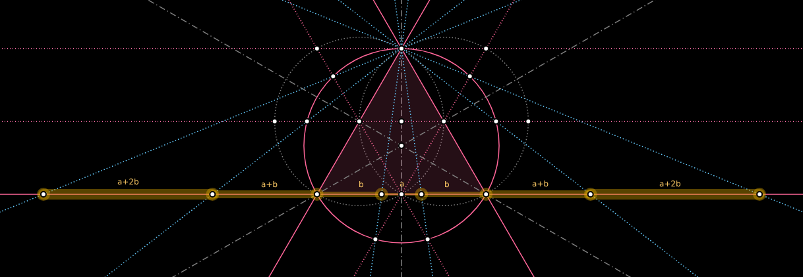
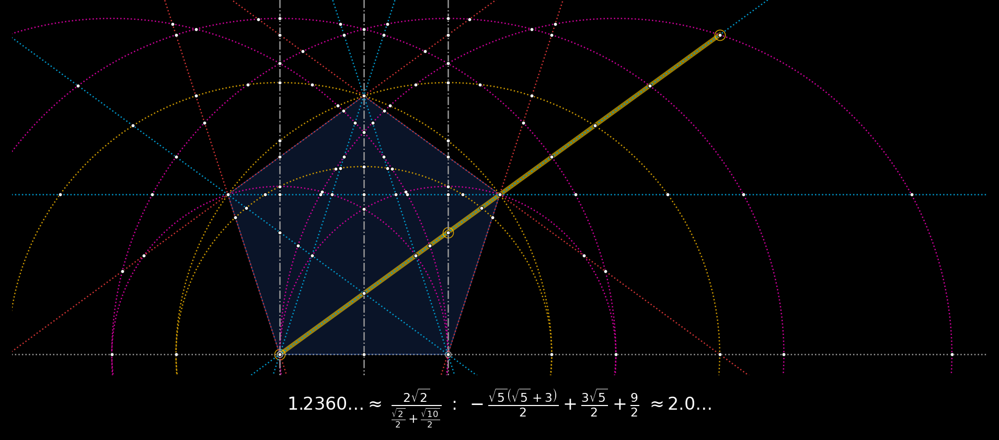
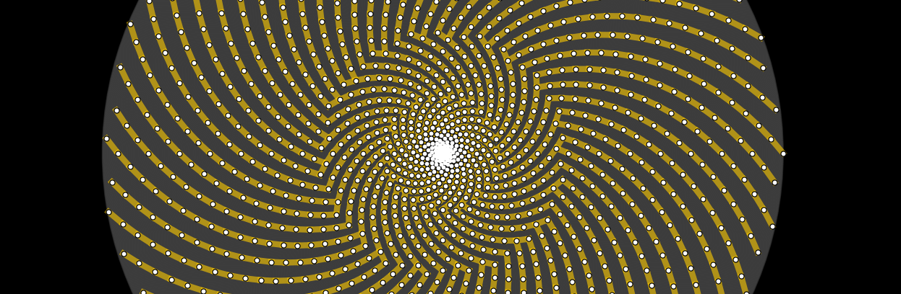

GEOMETOR¶
exploring the architecture of all that is¶

GEOMETOR is an open-source initiative dedicated to the exploration of fundamental aspects of geometry, nature, and logic.
A key mission has been the development of a Python software library to create symbolic models of classical geometric constructions
abstraction and reasoning¶
While the emphasis of the GEOMETOR project, has been geometry
arcprize: code and reference materials
geometric modeling¶

All of the research and development for GEOMETOR is located here in a collection of repositories. There are many, but these establish the foundation for the work:
patterns in nature¶

phyllotaxis
model and investigate geometry of plants
other interesting projects¶
pappus
model and investigate pappus theorem
Each repository has:
Python source code
demo code
source for project website
discussion group
log
todo list
MIT license
The website for each project is statically-generated and hosted through GitHub.
contribute¶
We welcome contributions from anyone interested in geometry, mathematics, nature, or programming. Feel free to contribute to our repositories, raise issues, or propose enhancements.
Check out general info on GEOMETOR:
GEOMETOR is an organization led by phi ARCHITECT